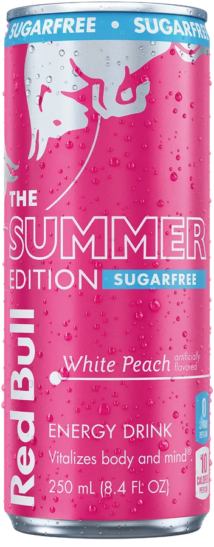

Redbull White Peach💗
Redbull White Peach är den godaste energidrycken du kan dricka
Om Redbull White Peach
Red Bull White Peach är en energidryck med en fruktig och söt smak av vit persika.
Den har en frisk smak som gör att den skiljer sig från många andra energidrycker.
White Peach passar bra för den som gillar persikosmak och vill testa något annat än de vanliga smakerna.
Den har också en ljus och fräsch design som passar bra ihop med den fruktiga smaken.


Ingredienser
- Koffein
- Vitaminer
- Fruktjuice
- Socker
Information
Redbull White Peach är en energidryck som blandar Redbulls koffein med smaken av white peach.
Den är perfekt för de som gillar en fruktig smak med en energi boost.
Fördelar👍
- God smak
- Ger energi
- Innehåller vitaminer
- Gör dig mer fokuserad
- Gör dig glad och energisk
Nackdelar👎
- Innehåller mycket socker
- Kan orsaka sömnlöshet
- Inte lämplig för barn
- Kan orsaka hjärtklappning
- Kan orsaka hälsoproblem
Varför Redbull White Peach?
Man ska välja Red Bull White Peach om man gillar en frisk och fruktig smak.
Den har en söt smak av vit persika som gör den annorlunda från många andra energidrycker.
Den passar bra för personer som vill prova en ny smak och gillar persika.
Dessutom har den en fräsch smak som många kan uppskatta.
_________________________________________________________________________________